Frontend
React.js, JavaScript, HTML,CSS, Tailwind CSS, Bootstrap
FRESH GRADUATE • OPEN TO OPPORTUNITIES
|
Computer Science graduate from the University of Lampung with an interest in frontend, backend, and full-stack web development. Experienced in building responsive web applications, REST APIs, databases, and information systems using various technologies and frameworks.
01 — ABOUT
I am Arip Saputra, a Computer Science graduate from the University of Lampung with a GPA of 3.42/4.00. I have experience in web development and building information systems.
My main interests include frontend, backend, and full-stack development. I like learning new technologies and creating solutions that are simple, responsive, and easy to use.
02 — SKILLS
React.js, JavaScript, HTML,CSS, Tailwind CSS, Bootstrap
Node.js, Express.js, Golang, PHP, Laravel and REST API development
PostgreSQL, MySQL and database design for web applications
Git, GitHub, Postman, Python, Pandas,Jmeter, Scikit-learn
03 — PROJECTS
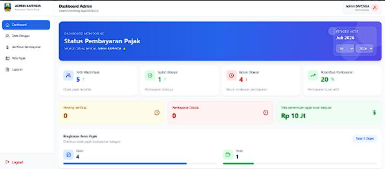
FINAL PROJECT • 2026
Web-based GIS for monitoring hotel, restaurant, and advertisement tax payments at BAPENDA Kabupaten Pesisir Barat.
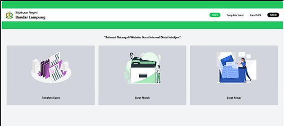
FINAL PROJECT • 2025
A web-based information system for managing and monitoring incoming and outgoing correspondence internally.
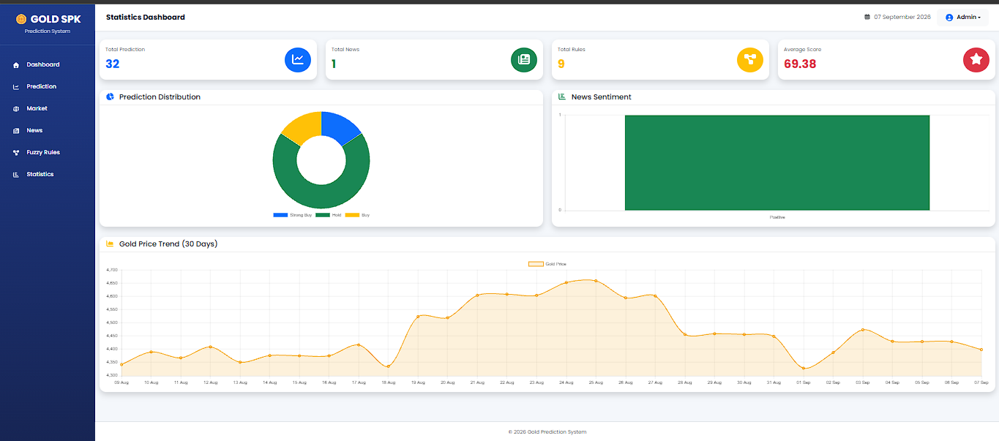
PERSONAL PROJECT * 2026
Developed a web application for predicting gold prices using machine learning techniques.
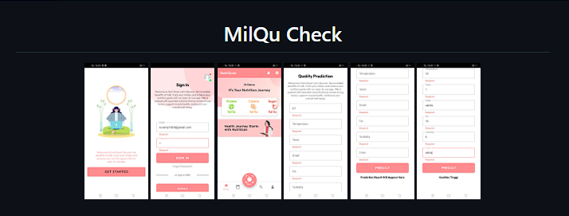
BANGKIT ACADEMY • MSIB BATCH 2 2024
A mobile application designed to assess and monitor milk quality. Served as a Cloud Computing team member, supporting cloud infrastructure, application deployment, and cloud-based services.
04 — JOURNEY
Universitas Lampung • FMIPA • GPA 3.42/4.00
EDUCATIONS1 Computer Science, Way Kanan • Assisted with practical programming and algorithms sessions, guiding students through exercises and problem-solving activities.
EXPERIENCEDeveloped backend services and API for a GIS-based tax payment monitoring system.
PROJECTDeveloped backend services and API for a Internal Incoming and Outgoing Correspondence Information System.
PROJECTCompleted the Bangkit Academy program as a Cloud Computing participant, gaining practical experience in cloud computing,backend development, and collaborative software development.
EDUCATIONBuilt academic and personal projects across frontend, backend, databases
DEVELOPMENT05 — ORGANIZATIONS
A dedicated space for organizational experience, committees, communities, and other activities. Replace the logo placeholders with your real organization images.
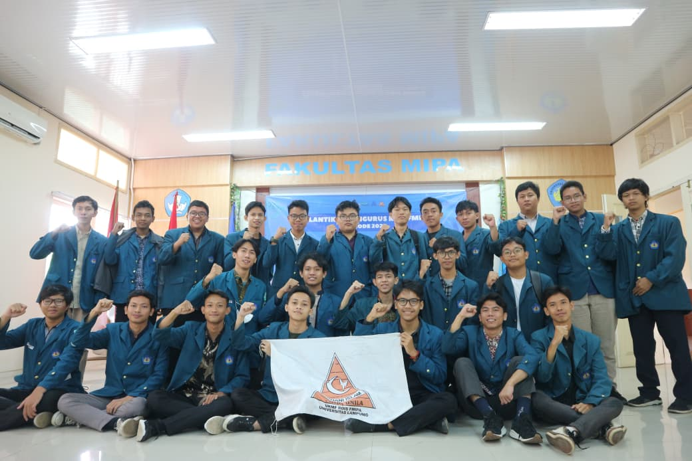
Served as a member of the Cadre Development Division, supporting member development activities, organizational programs, and fostering teamwork and leadership among members.
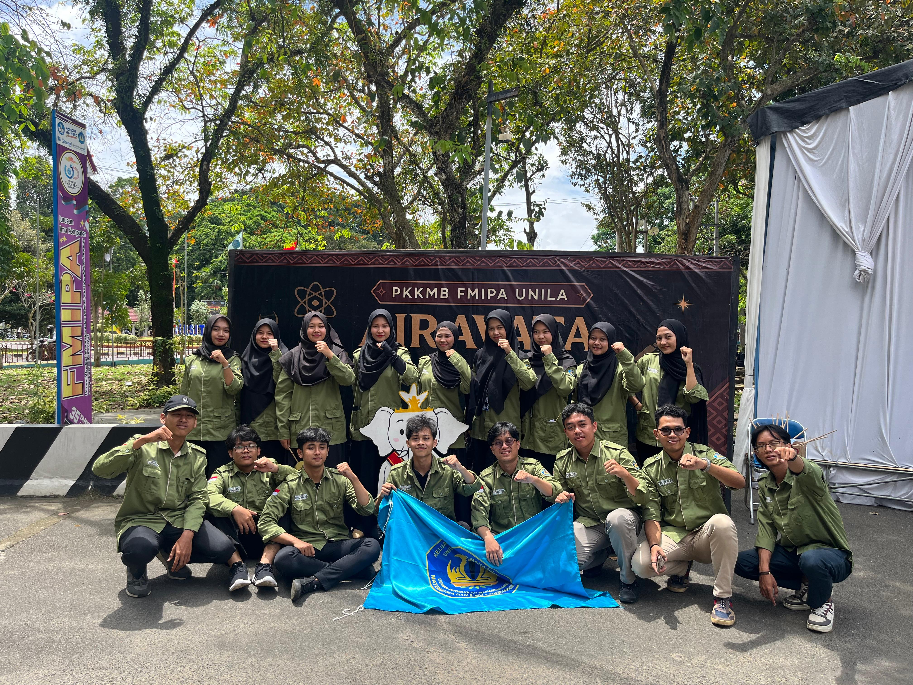
Contributed as a member of the Legislative Division by supporting student representation, discussions, and organizational activities within the faculty.
06 — CERTIFICATES
Show your certifications, training, courses, and achievements as visual cards. You can add as many certificate images as you need.
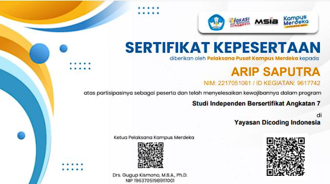
Independent Learning Program • Kampus Merdeka • 2024
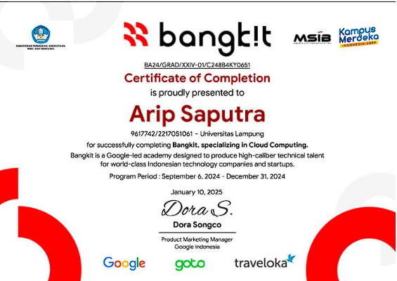
Completed a structured learning program focused on technology, professional skills, and career development.
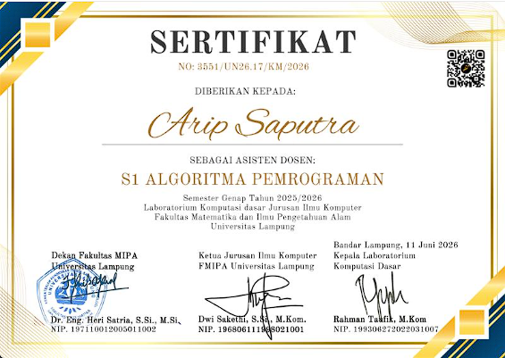
Helps teach programming and algorithm concepts, and guides students through problem-solving exercises and practical programming activities.
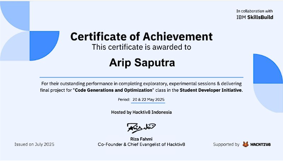
Supported programming education by guiding students in programming, algorithms, problem-solving, and practical activities.
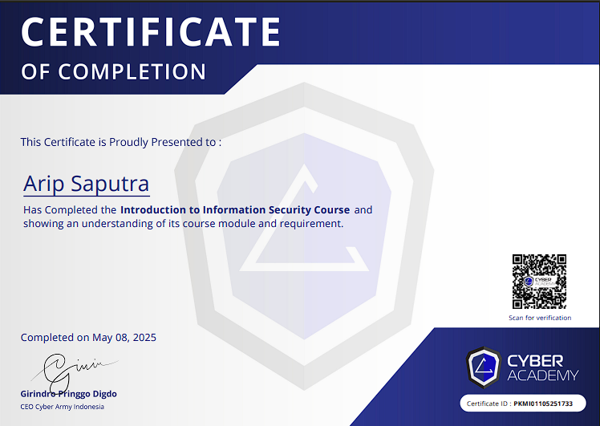
Learned fundamental concepts of information security, cybersecurity, data protection, and security best practices.
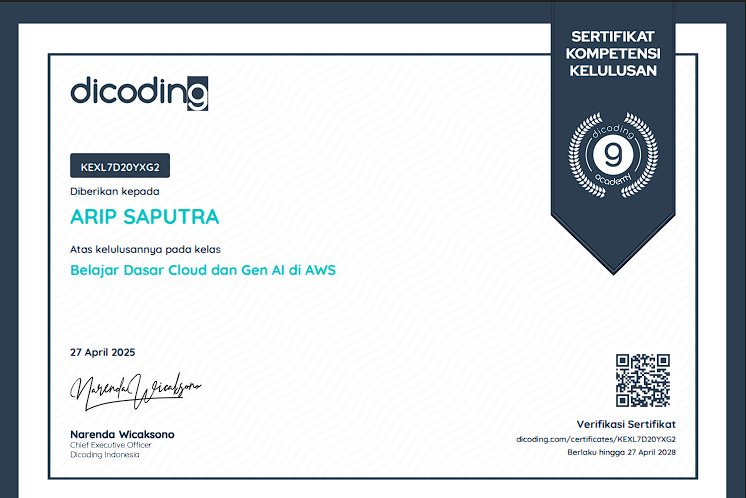
Gained foundational knowledge of AWS cloud computing, generative AI, and their practical applications.
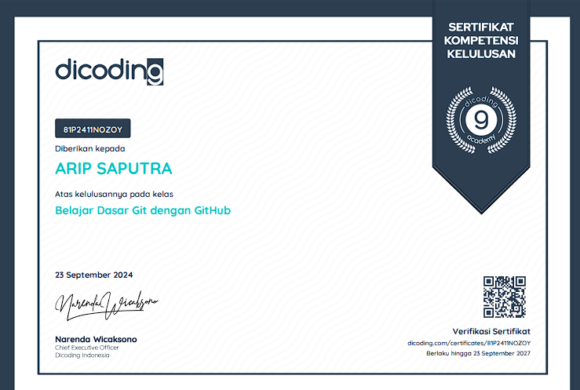
Learned the fundamentals of Git and GitHub for version control, repository management, and collaborative development.
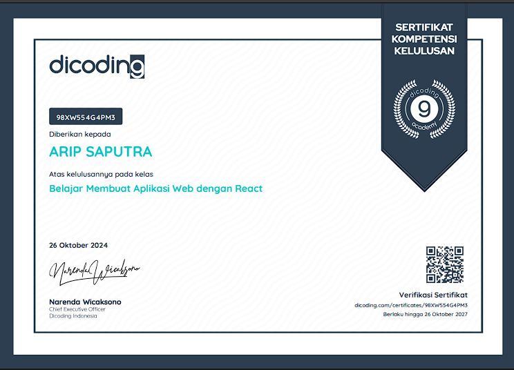
Learned the fundamentals of React for building modern web applications.
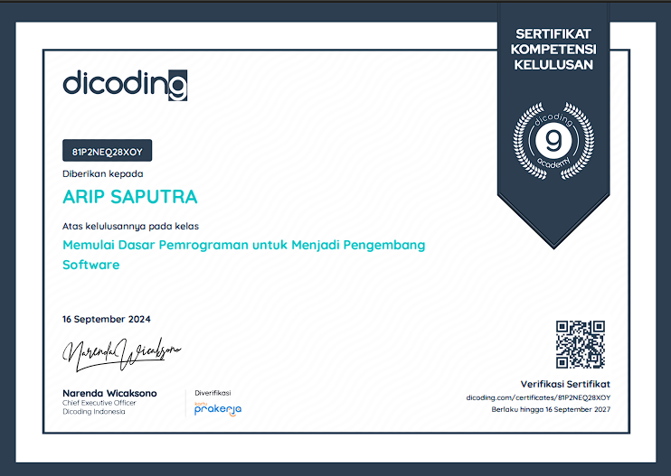
Learned the fundamentals of programming concepts and practices.
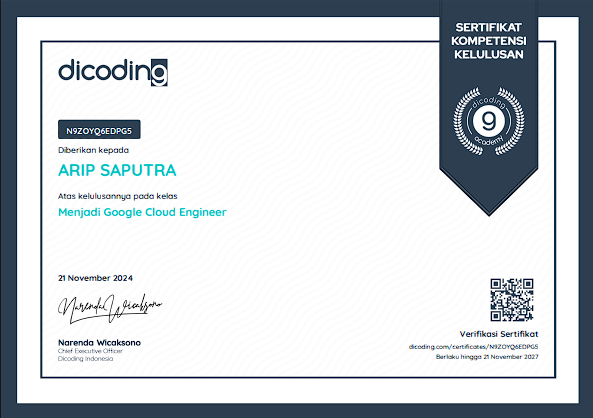
Learned the fundamentals of Google Cloud Platform and its services.
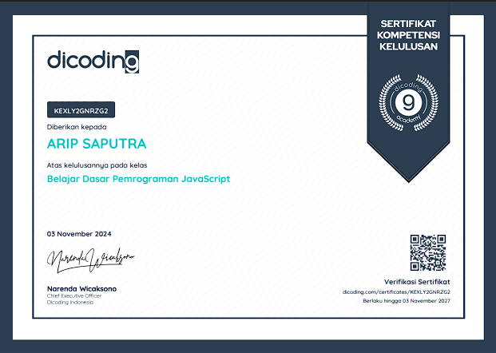
Learned the fundamentals of JavaScript programming.
07 — CONTACT
Have an opportunity, project, or collaboration in mind? Send me a message through any channel below.